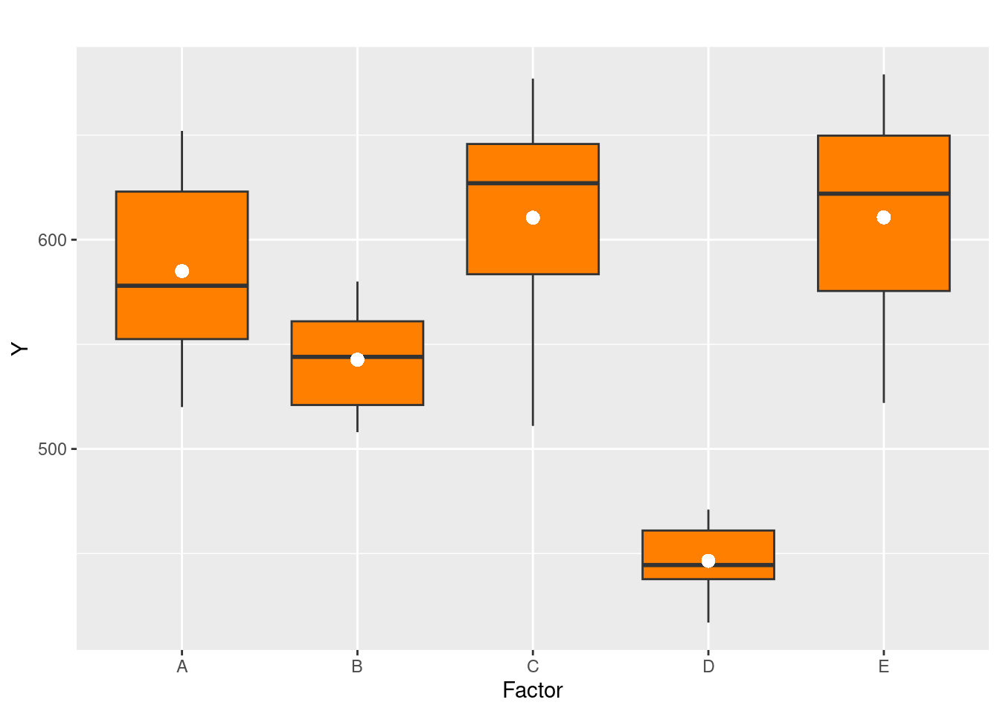
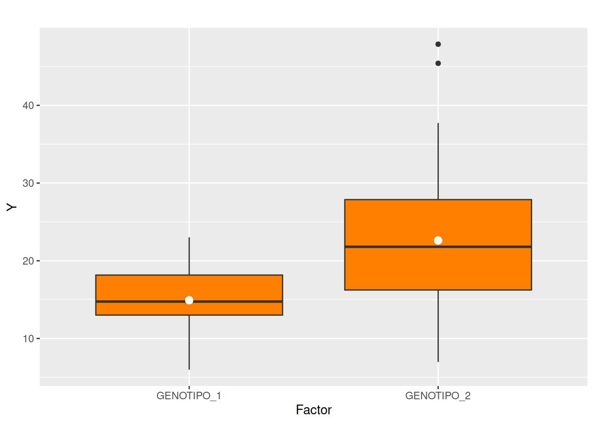
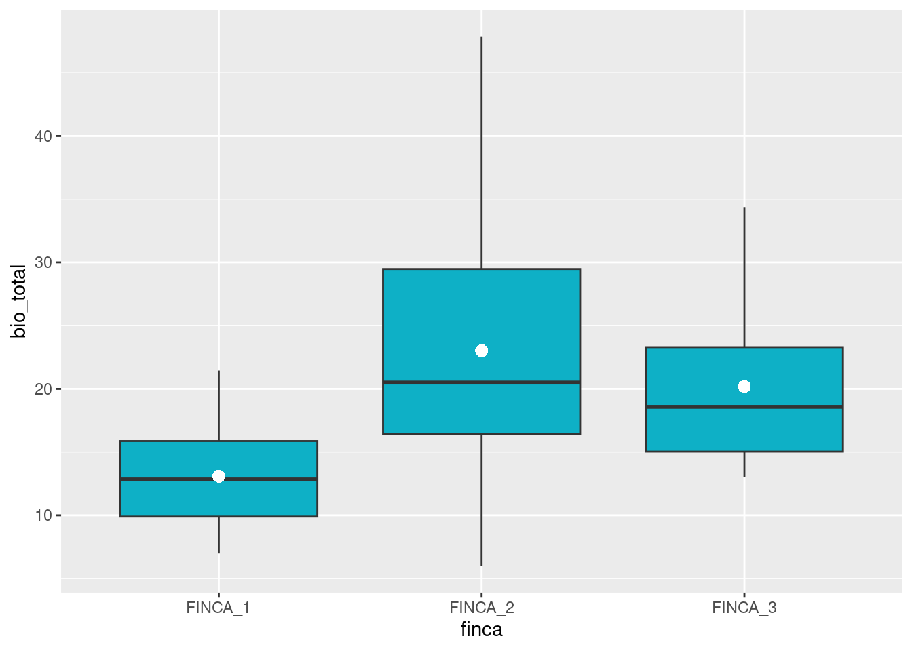

El modelo de diseño de experimentos forma parte del grupo de modelos que conforman los modelos lineales generales. En este caso la variable dependiente \(Y\) es una variable cuantitativa, mientras que la variable independientes \(X_1, X_2, \dots\) corresponden a una variables cualitativas con valores que permiten dividir la variable \(Y\) en subgrupos.
\[ Y = \alpha_{0} +\alpha_{1} X_1 +\alpha_{2} X_2 + \dots +\alpha_{k} X_k + \varepsilon \]
La siguiente información corresponde a
| \(i\) | 1 | 2 | 3 | 4 | 5 | 6 |
|---|---|---|---|---|---|---|
| Tratamientos | ||||||
| A | 551 | 557 | 520 | 631 | 599 | 632 |
| B | 555 | 580 | 508 | 563 | 533 | 517 |
| C | 639 | 615 | 511 | 573 | 648 | 677 |
| D | 471 | 449 | 440 | 437 | 417 | 465 |
| E | 563 | 631 | 522 | 613 | 656 | 679 |
Donde:
\(A\),\(B\),\(C\),\(D\) y \(E\) consforman los \(k=5\) tratamientos, cada uno de ellos con \(n_i=6\) replicas

Df Sum Sq Mean Sq F value Pr(>F)
x1 4 113524 28381 13.12 6.84e-06 ***
Residuals 25 54076 2163
---
Signif. codes: 0 '***' 0.001 '**' 0.01 '*' 0.05 '.' 0.1 ' ' 1
Call:
glm(formula = y1 ~ x1, data = datos)
Deviance Residuals:
Min 1Q Median 3Q Max
-99.50 -29.12 3.50 27.50 68.33
Coefficients:
Estimate Std. Error t value Pr(>|t|)
(Intercept) 585.00 18.99 30.811 < 2e-16 ***
x1B -42.33 26.85 -1.577 0.127
x1C 25.50 26.85 0.950 0.351
x1D -138.50 26.85 -5.158 2.48e-05 ***
x1E 25.67 26.85 0.956 0.348
---
Signif. codes: 0 '***' 0.001 '**' 0.01 '*' 0.05 '.' 0.1 ' ' 1
(Dispersion parameter for gaussian family taken to be 2163.027)
Null deviance: 167600 on 29 degrees of freedom
Residual deviance: 54076 on 25 degrees of freedom
AIC: 322.04
Number of Fisher Scoring iterations: 2
Los valores correspondientes a las estimaciones corresponde a:
| Coeficiente | descripcion |
|---|---|
Intercepto 585.00 |
\(\bar{x}_{A}\) : valor de la media de y para el tratamiento A |
x1B -42.33 |
\(\bar{x}_{A} + \alpha_1 = \bar{x}_{B} = 585.00 - \hspace{.3cm} 42.33 = 542.67\) |
x1C 25.50 |
\(\bar{x}_{A} + \alpha_2 = \bar{x}_{C} = 585.00 + \hspace{.3cm} 25.50 = 610.85\) |
x1D -138.50 |
\(\bar{x}_{A} + \alpha_3 = \bar{x}_{D} = 585.00 - 138.50 = 610.50\) |
x1E 25.67 |
\(\bar{x}_{A} + \alpha_4 = \bar{x}_{E} = 585.00 + \hspace{.3cm} 25.67 = 610.67\) |
Adicionalmente podemos observar que el intercepto (media de A) y el coeficiente relacionado con el tratamiento D son estadiísticamente significativos, lo cual concuerda con los resultados obtenidos al comparar las medias de los tratamientos utilizando la ANOVA
Las variables categóricas a incluir en el modelo son :
library(paqueteMOD)
data(biomasa)
table(biomasa[,1:2]) mg
finca GENOTIPO_1 GENOTIPO_2
FINCA_1 15 15
FINCA_2 15 15
FINCA_3 15 15El proceso de selección a previsto cantidades iguales por finca y genotipo de los árboles, proceso que permite neutralizar efectos aleatorios en la moderación
De manera grafica representamos la información por genotipo
library(ggplot2)
ggplot2::ggplot(data=biomasa, aes(x=mg, y=bio_total), fill=mg)+
geom_boxplot(fill=c1)+
stat_summary(fun = "mean", geom = "point", shape = 16,
size = 3, color = "white")+
labs(title="",
x ="Factor", y = "Y") Figura 1 : biomasa total por genotipo
Se evaluan las diferencias entre las medias de los genotipos
anova1<-aov(bio_total ~ mg, biomasa)
summary(anova1) Df Sum Sq Mean Sq F value Pr(>F)
mg 1 1332 1332.3 25.54 2.33e-06 ***
Residuals 88 4590 52.2
---
Signif. codes: 0 '***' 0.001 '**' 0.01 '*' 0.05 '.' 0.1 ' ' 1Tambien se repersenta graficamente las distribuciones de la biomasa total por finca
library(ggplot2)
library(ggplot2)
ggplot2::ggplot(data=biomasa, aes(x=finca, y=bio_total), fill=finca)+
geom_boxplot(fill="#0EB0C6")+
stat_summary(fun = "mean", geom = "point", shape = 16,
size = 3, color = "white")
Figura 2 : biomasa total por finca
Y su respectivo análisis de varianza
anova2<-aov(bio_total ~ finca, biomasa)
summary(anova2) Df Sum Sq Mean Sq F value Pr(>F)
finca 2 1572 786.1 15.72 1.48e-06 ***
Residuals 87 4350 50.0
---
Signif. codes: 0 '***' 0.001 '**' 0.01 '*' 0.05 '.' 0.1 ' ' 1Iniciaremos con un modelo simple que relaciona la biomasa total con la finca
\[ Y = \alpha_{0} +\alpha_{1} \hspace{.2cm}\text{finca} + \varepsilon \]
modelo1_d=glm(bio_total~ finca, data=biomasa)
summary(modelo1_d)
Call:
glm(formula = bio_total ~ finca, data = biomasa)
Deviance Residuals:
Min 1Q Median 3Q Max
-17.042 -5.264 -1.363 3.308 24.848
Coefficients:
Estimate Std. Error t value Pr(>|t|)
(Intercept) 13.086 1.291 10.136 < 2e-16 ***
fincaFINCA_2 9.936 1.826 5.442 4.79e-07 ***
fincaFINCA_3 7.104 1.826 3.891 0.000195 ***
---
Signif. codes: 0 '***' 0.001 '**' 0.01 '*' 0.05 '.' 0.1 ' ' 1
(Dispersion parameter for gaussian family taken to be 50.00081)
Null deviance: 5922.2 on 89 degrees of freedom
Residual deviance: 4350.1 on 87 degrees of freedom
AIC: 612.44
Number of Fisher Scoring iterations: 2El resultado estima los promedios de la biomasa total de la finca1 y los efectos promedios adicionales sobre este valor, generados la ubicación de los árboles en las fincas 2 y 3 sobre el promedio de biomasa de la finca1
| Coeficiente | descripcion |
|---|---|
\(\alpha_{0}\)= 13.086 |
\(\bar{x}_{f1}\) : valor de la media de biomasa total finca 1 |
\(\alpha_{12}\)= 9.936 |
\(\bar{x}_{f1} + \alpha_{12} = \bar{x}_{f2} = 13.936 + \hspace{.3cm} 9.936 = 23.022\) |
\(\alpha_{13}\)= 7.104 |
\(\bar{x}_{f1} + \alpha_{13} = \bar{x}_{f3} = 13.936 + \hspace{.3cm} 7.104 = 20.19\) |
Lo anterior ratifica lo observado en la gráfica 2, indicando que el mayor valor promedio de biomasa total se ubica en la finca 3.
Ahora estimamos un modelo con dos variables independientes, recordemos ambas categóricas
\[ Y = \alpha_{0} +\alpha_{1} \hspace{.2cm}\text{finca} + \alpha_{2} \hspace{.2cm} \text{genotipo} + \varepsilon \]
modelo1_d=glm(bio_total~ finca + mg, data=biomasa)
summary(modelo1_d)
Call:
glm(formula = bio_total ~ finca + mg, data = biomasa)
Deviance Residuals:
Min 1Q Median 3Q Max
-13.195 -3.097 -0.281 3.551 21.001
Coefficients:
Estimate Std. Error t value Pr(>|t|)
(Intercept) 9.239 1.249 7.398 8.60e-11 ***
FINCA_2 9.936 1.530 6.496 5.12e-09 ***
FINCA_3 7.104 1.530 4.645 1.21e-05 ***
GENOTIPO_2 7.695 1.249 6.162 2.25e-08 ***
---
Signif. codes: 0 ‘***’ 0.001 ‘**’ 0.01 ‘*’ 0.05 ‘.’ 0.1 ‘ ’ 1
(Dispersion parameter for gaussian family taken to be 35.09089)
Null deviance: 5922.2 on 89 degrees of freedom
Residual deviance: 3017.8 on 86 degrees of freedom
AIC: 581.53
Number of Fisher Scoring iterations: 2
\[ Y = \alpha_{0} +\alpha_{1} \hspace{.2cm}\text{finca} + \alpha_{2} \hspace{.2cm} \text{genotipo} + \alpha_{3} \hspace{.2cm}\text{finca} \times \text{genotipo} + \varepsilon \] En este modelo además de las variables categóricas se adiciona una tercera variable formada por la interacción de las dos variables
modelo1_d=glm(bio_total~ finca + mg + finca*mg, data=biomasa)
summary(modelo1_d)
Call:
glm(formula = bio_total ~ finca + mg + finca * mg, data = biomasa)
Deviance Residuals:
Min 1Q Median 3Q Max
-12.948 -2.791 -0.334 3.365 18.842
Coefficients:
Estimate Std. Error t value Pr(>|t|)
(Intercept) 11.702 1.462 8.004 5.95e-12 ***
FINCA_2 5.314 2.068 2.570 0.01193 *
FINCA_3 4.336 2.068 2.097 0.03899 *
GENOTIPO_2 2.768 2.068 1.339 0.18426
FINCA_2:GENOTIPO_2 9.244 2.924 3.161 0.00218 **
FINCA_3:GENOTIPO_2 5.537 2.924 1.894 0.06173 .
---
Signif. codes: 0 ‘***’ 0.001 ‘**’ 0.01 ‘*’ 0.05 ‘.’ 0.1 ‘ ’ 1
(Dispersion parameter for gaussian family taken to be 32.06179)
Null deviance: 5922.2 on 89 degrees of freedom
Residual deviance: 2693.2 on 84 degrees of freedom
AIC: 575.29
Number of Fisher Scoring iterations: 2